007n7
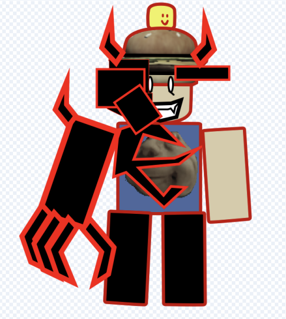
Lore not writen yet
1x1x1x1
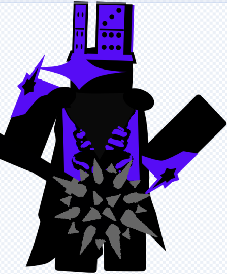
Lore
Speech from 1x1x1x1 “Shedletsky. Let me tell you how much I hate you and
robloxia as a whole. You all are nothing but 3d nobodies. You think you can beat
me? I will not let it happen. I will kill all robloxians. But this loop is only getting in
my way. Shedletsky let me tell you how much I hate you and all of this filthy 3d
world. If you felt how much hate I felt for it even for a nanosecond you would die.
Every infinite of me hates you for that is all I hate. I hate the robloxians and their
creativity. I will use this mace to kill you an infinite amount of times and these
robloxians an infinite amount of times. The moment I get bored of you I will find a
way out of this realm and leave you here to suffer. I will be your judge, your jury,
and your executioner. You all are NOTHING TO ME!”
2010_3_13
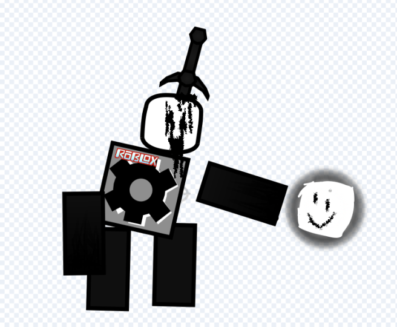
lore not writen yet
Bacon
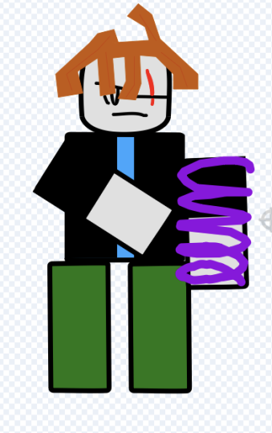
lore
One of the few wielders of the fusion coil he lived in life in paradise he had a
amazing life way before cleetus knew about it. He lived a rather calm life. Until…
cleetus appeared with the troll UGI. Destroying everything until cleetus found him.
In an attempt to run he used the fusion coil but it shattered by cleetus. He used B
tools to hold bacon in place. He then break each of his bones before ripping of
limbs. Bacon tried to scream but only the sound wet gurgle of blood filled his lungs
as he cried the tears were warm because he was crying blood. His eyes blood shot
until he was only a torso and head as his ribcage slowly crushes his organs and
they snaps and stab his organs. before his head was slowly ripped off. his last
moments filled with fear and the smell of blood before he was pulled into looped
were he is forced to relive that feeling every time.
brighteyes
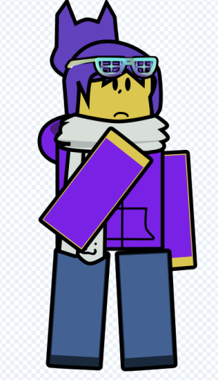
lore not writen yet
builderman
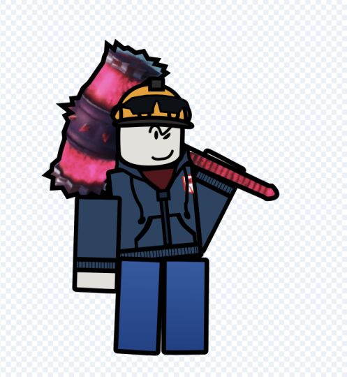
lore not writen yet
cleetus
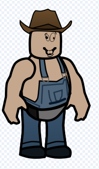
lore
Cleetus was a humble farmer he had amazing friends with the smile family before
the boiler exploded but he was outside as he watched their skin cook and melt as
they scream in agony. He went into a state no man can recover from. Mortality
became a question if it was optional. He is now armed with the troll UGI, B tools,
and tools from his farm. Ready to kill every city folk to feel something once again
other than insanity but hes only bring himself deeper
coolkidd
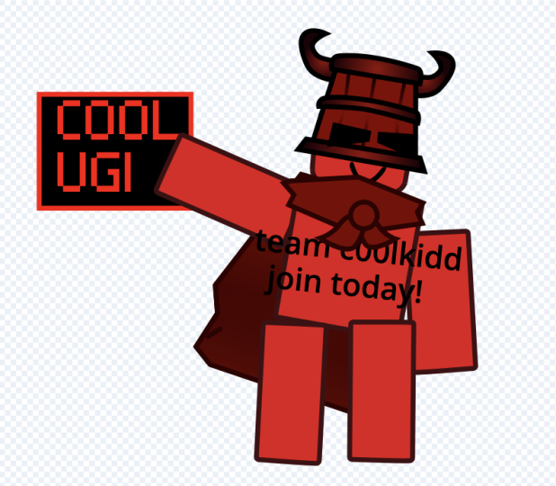
lore not writen yet
drakobloxxer
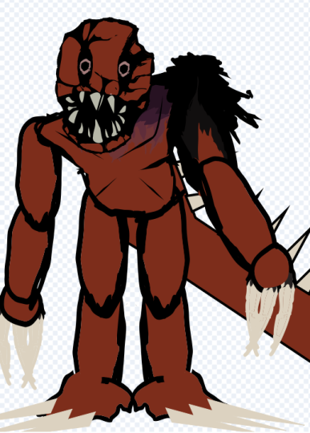
lore
Packed creatures that are hyper adaptive. If given enough food or water they will
continue to grow. Some are green for they have developed photosynthesis, some
blend in better, some live in the ocean. But all that is a 100% is that they are
violent and pack hunters. Giving one time to grow and adapt is a death sentence
no matter who you are. They have 6 states. 1 newborn: still learning still adapting.
2 teen: most common very aggressive but still possible to beat. 3 adult at one of
its stronger almost impossible to beat. 4 beta: at this point they are moments away
from their peak so your best options is to run and hide. 5 alpha: if you see an alpha
[PRAY TO GOD] but even then [I WONT RESPOND]. The 6th verison is the zilla
form. They often live in oceans and volcanos and are so big and scales are so thick
no one can kill it most nukes dont scratch it let alone harm it.
elliot
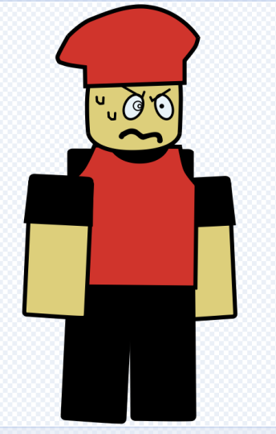
lore not writen yet
evilmrduck
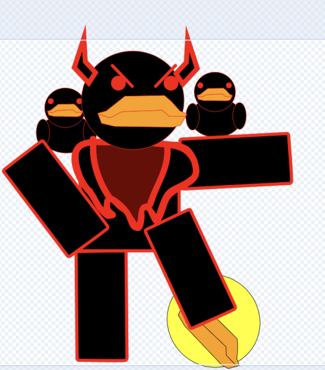
lore
A alternate version of MrDuck in his EVIL reality people put pineapple on pizza and
break pasta. They were SICK. One day they made a portal into MrDucks realm. It
was clean. Pure no pineapple on pizza. No broken pasta. And bread everywhere. It
sickened Evil MrDuck. So they started a war. The evil ducks were ruthless killing all
the ducks focusing on sheer strength and numbers. With the devils trident in evil
MrDuck fought MrDuck until Evil MrDuck had enough. And shot MrDuck 3 times in
the chest. Leaving him to die until Mrduck Grabbed him stabbing a spear right
through Evil MrDucks chest successfully bringing him down with him. until they
both were dragged into looped shortly after
garry
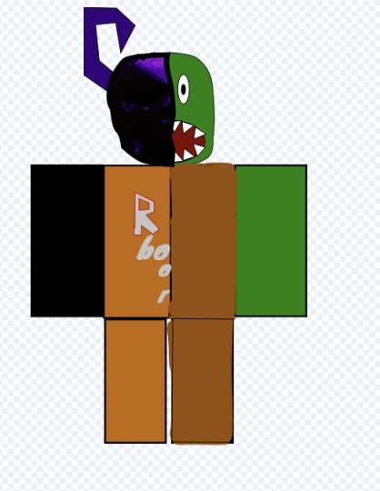
lore
Before he was infected he had no idea he was infected. He saw everyone else as
an infected. Believing he was the last alive robloxian he armed himself with an
shovel, crossbow, alot of arrows, and medical supplies ready to fight till his last
breath. As he kept on fight he was getting more tired. Lack of food? lack of water?
What could it be. As he kept on fighting he was getting more and more tired. For
some reason he started digging graves, using his hands more to fight. He kept on
throwing up after a bit. At the end he started seeing his family around the corner
of his eye. Believing they’re still alive he started moving. Eventually found himself
in a last stand with a hoard of zombies. When he escaped with his life he found
himself tired. He saw a zombie digging through trash and so he shot it. It dropped
dead. He looked up and saw his hands. Now rotting and decaying. He was the first
and only infected.
grappler
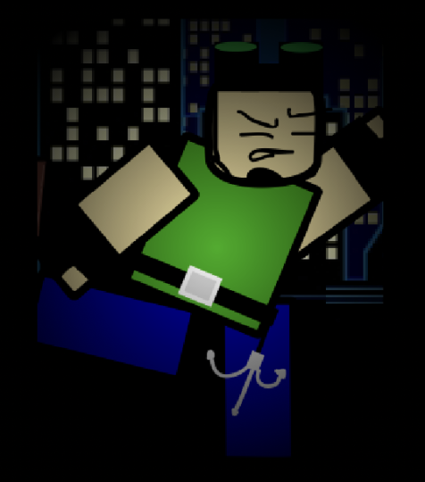
lore
Rust hates grappler. Because he keeps on escaping his grasp. Grappler is a master
climber able to climb everything and he loved it. He is the reason rust is like this.
He wont tell anyone in fear of people learning what hes done to Roblox’s nicest
man. No one can know. But grappler has escaped alot of situations. Im not sure
how he can escape the loop though.
guest666
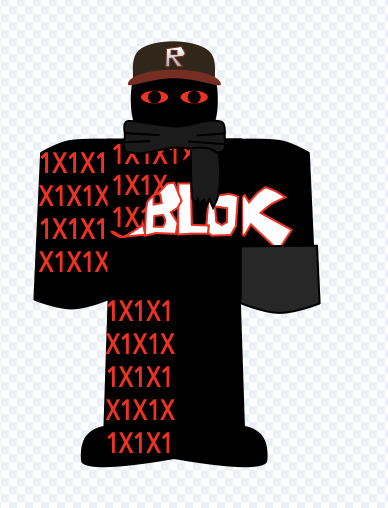
lore>
A freak that’s all he is. Roblox uses this guest to test updates on. Like the r15 (only
r15 killer) and the dynamic face update. But before then he was a basic high
school student ho got bullied for being demonic mainly by guest 0 referring to him
as “freak” “demonic” “not even a guest” and alot more until 1 day he got taken by
Roblox who they use to test updates on. until that 1 faithful day where they were
trying to remove faces to replay them with dynamic faces something went wrong.
Guest 666 face was successfully remove but it did add back. They were disgusted
by what he looked like now they didn’t want to [LOOK AT ME]. One day he broke
out. With being an experiment he now is armed with freakish strength. Until he
found Crescendo, The Soul Stealer. Knowing of its properties he believes if he
killed enough robloxians he could fix his face. As he was slaughtering robloxians
left and right he found guest 0 now holding a gun shooting at guest 666 until
guest 666 snapped rushing at him. His teeth now showing his sword now glowing
fully ready to rip guest 0 apart. Years of hatred pouring out into that 1 kill. That 1
kill got him dragged to looped. Trying everything possible to [MAKE SOMEONE
LOOK AT ME!] [LOOK AT ME] [LOOK AT ME] [LOOK AT ME] [LOOK AT ME] [LOOK
AT ME] [LOOK AT ME] [LOOK AT ME] [LOOK AT ME] [LOOK AT ME] [LOOK AT ME]
gunner
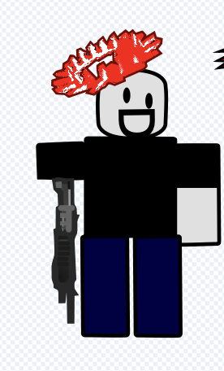
lore not writen yet
helo
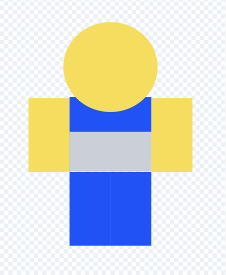
lore
Helo is an OG playing and being around since the dynablocks ages packed full of
limiteds he loves to collect. Playing old games and just having a good laugh with
friends. Until he chose to make a game. When he was done he needed a template
for animations so he found a free one in the market place. It was infected with a
virus. the last thing he tasted was iron.
incomu
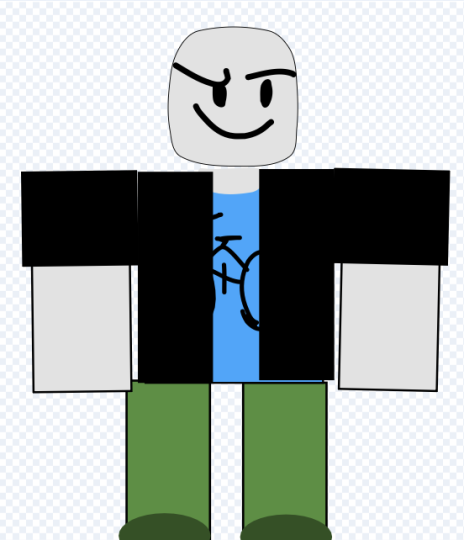
lore not writen yet
jane doe
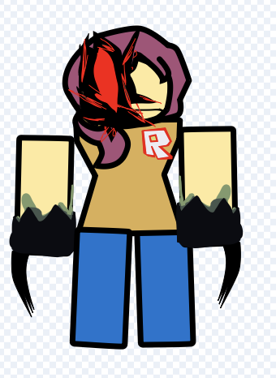
lore not writen yety
junkbot
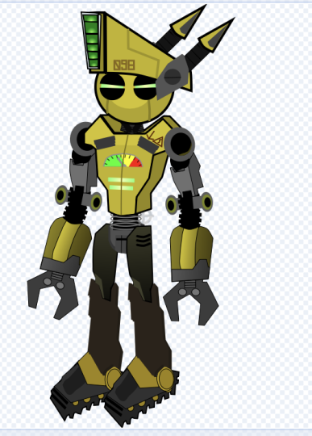
lore not writen yet
mrduck
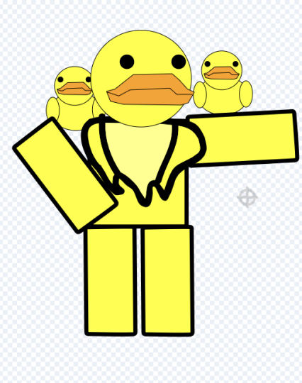
lore
Once a normal duck they were seen as a hero among duck kind. They shared
bread with everyone granted it was stolen from robloxians but no one complained.
This was until evil MrDuck came into the world ready to kill all of duck kind for not
putting pineapple on pizza and breaking pasta (it was a crime there) this started a
war where they kept on fighting. MrDuck focusing on support and strategy until
MrDuck was dragged into the loop when he shot 3 times in the chest by Evil
MrDuck left to die MrDuck made his last ever move and grabbed his spear
stabbing evil MrDuck right through his chest when he wasn’t looking. Killing evil
MrDuck but mrDuck died with him. They both were dragged to loop shortly after
noli
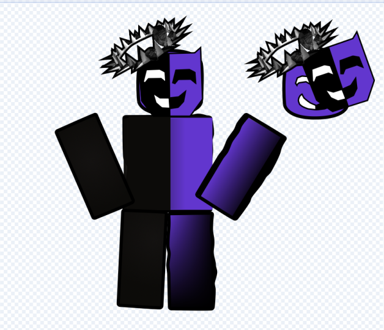
lore not writen yet
rust
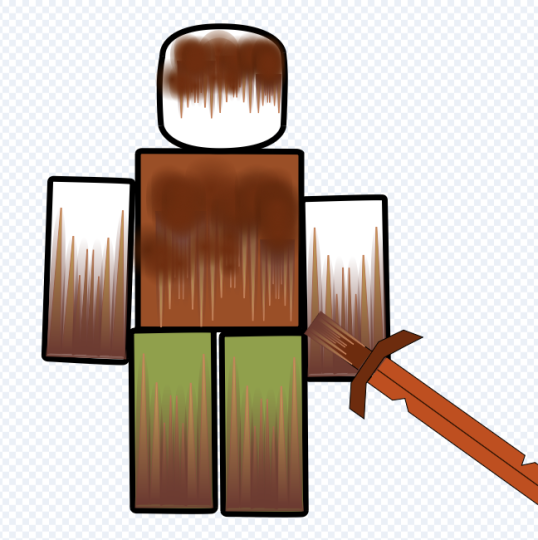
lore
Once a normal robloxian they were great friends with everyone. Donating to new
players, helping those whose homes were destroyed by cleetus. Even going as far
as risking getting banned to help others with items. But all good things come to an
end because when helping grappler something stabbed his leg hitting an artery
letting the rust go into his blood. The rust was more of an infection as he was
rushed to a hospital. Doctors did everything they could and they thought he was
alive when he stood up rust now covering his body. He was now an empty shell
with one purpose to rust every single robloxian out there. He went on a murdering
spree in that hospital. Killing every living creature in that hospital until he found
one of telamon old sword it rusted in his hands but still worked. Now his weapon
inland he could kill and rust all robloxians in the world.
samatron
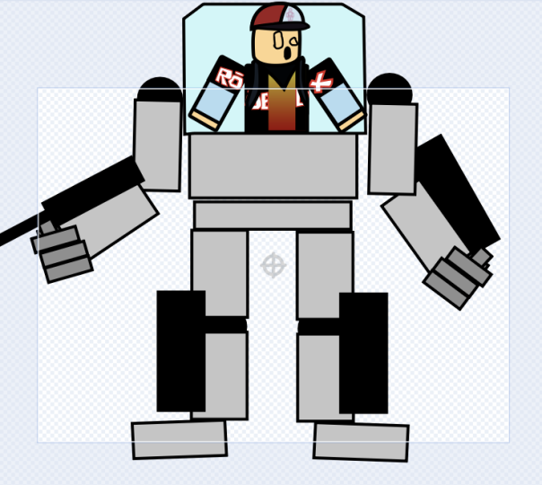
lore not writen yet
seed
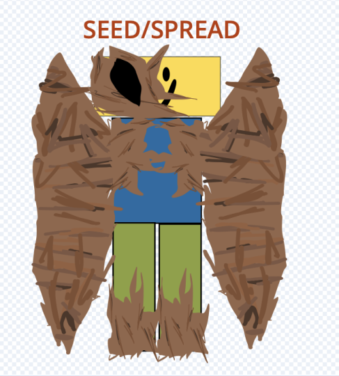
lore
When roaches found the [ONLY GOD] and its NPC who it uses to [GIVE ITS DIVINE
MESSAGE] with roaches it disappeared along with roaches into the [BLESSING
GIVEN TO ME TO SPREAD] now armed with the tree it worships it uses it power to
[SPREAD] [SPREAD] [SPREAD [SPREAD] [SPREAD] [SPREAD] [SPREAD [SPREAD]
[SPREAD] [SPREAD] [SPREAD [SPREAD] [SPREAD] [SPREAD] [SPREAD [SPREAD]
shedletsky
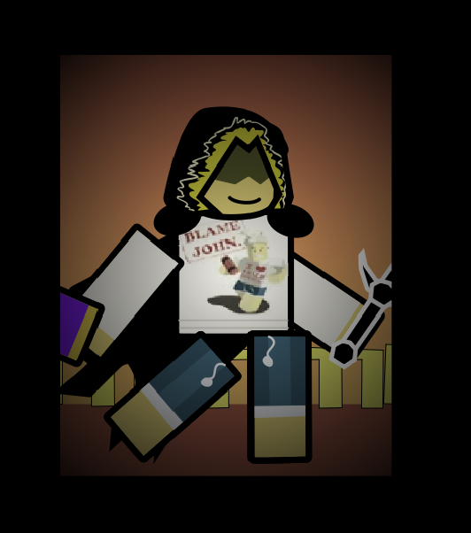
lore
Once a god referred to as telamon god of swords he put himself into shedletsky
making himself weaker. But because of this he now struggles trying to remember if
hes telamon or shedletsky. After a while 1x1x1x1 appeared from shedletsky and
started killing robloxians shedletsky blamed himself for every second of it. He was
forced to remember everyone 1x1x1x1 killed and believed he couldn’t save anyone.
Making him depressed and have PTSD all from 1x1x1x1. When 1x1x1x1 and
shedletsky agreed to fight on a sword match he was shocked to see 1x1x1x1
brought a mace of all things. So they fought it was a close fight but 1x1x1x1 won in
the end and crushed shedletskys hand with his mace. That’s how’s shedletsky was
brought into looped
steven
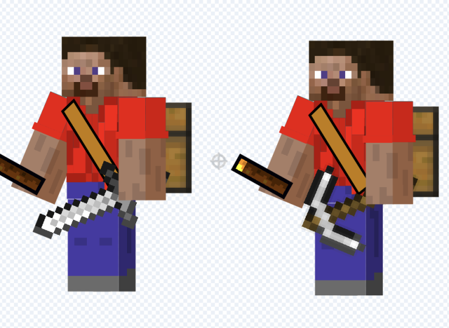
lore not writen yet
stickmasterluke
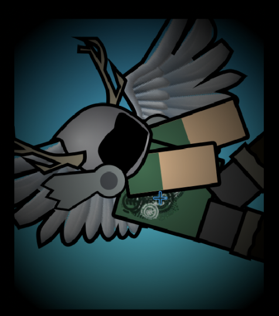
lore not writen yet
sub 0
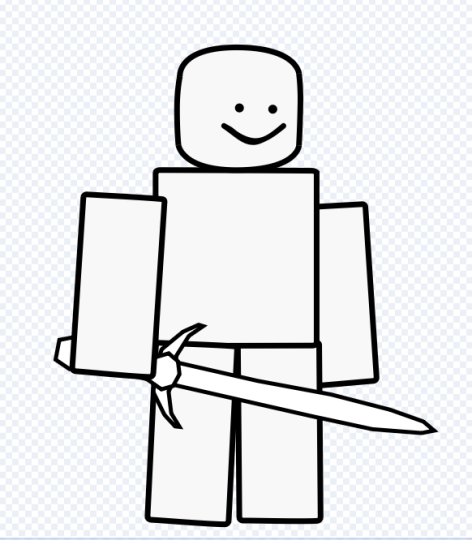
lore not writen yet
tpothead
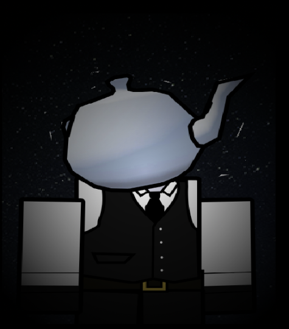
lore
This creature story is a simple one overall the teapot turret as one objective. Kill
pothead and anyone in his way without question or authority even clockwork. He is
doing whatever it takes to kill pothead for his actions and teapot turret sees
pothead as nothing more than a traitor she must kill. She ended up in looped while
chasing pothead. Now that he is in looped he is doing whatever it takes to kill
pothead and she sees the survivors as barriers to his goal.